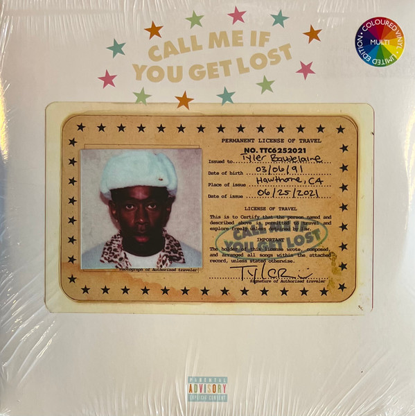
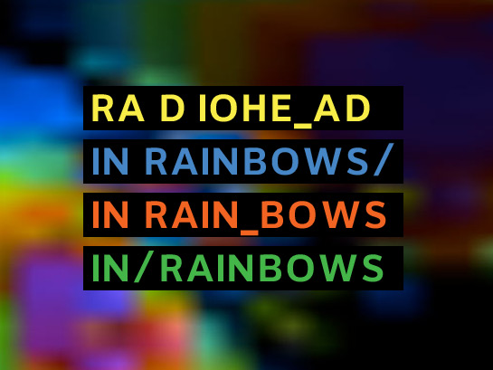

GUSTOS MUSICALES
Explora todo el tipo de música que me gusta. Te invito a conocer nuevos géneros

Tyler the Creator
Music ProducerBonnie drives the technical strategy of the flowbite platform and brand.

Radiohead
Alternative Rock BandRadiohead es una banda británica de rock alternativo originaria de Abingdon-on-Thames, Inglaterra, formada en 1985 inicialmente como una banda de versiones. Está integrada por Thom Yorke, Jonny Greenwood, Ed O'Brien, Colin Greenwood y Phil Selway.

The Smiths
Rock BandThe Smiths fue un grupo inglés de rock alternativo formado en Mánchester en 1982. Estaba integrado por Morrissey, Johnny Marr, Andy Rourke y Mike Joyce.